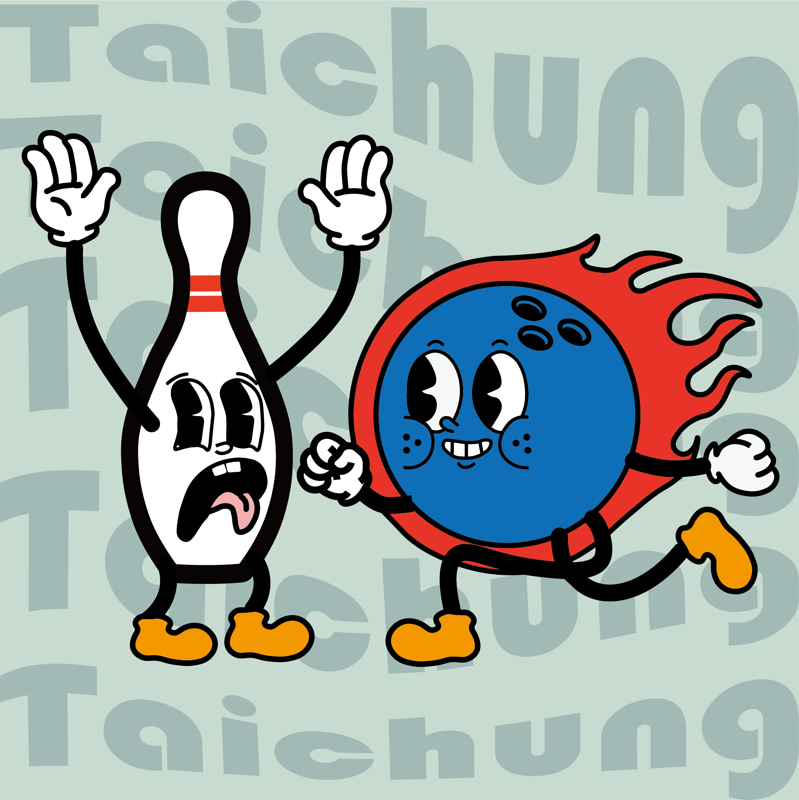
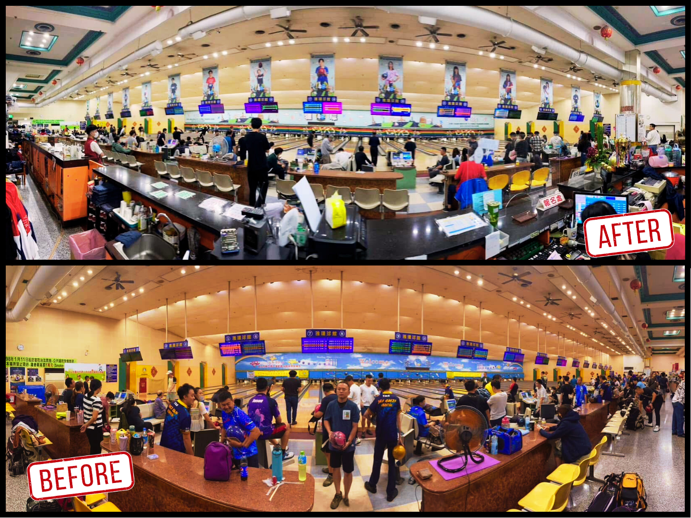

本次設計以「第35屆亞洲城市保齡球錦標賽」為核心，教練提出希望融入「環遊世界」的概念，展現國際賽事的多元與交流精神。 為了讓球館空間更具整體性與沉浸感，我在長幅牆面視覺中加入多國代表性建築與文化意象，打造如旅遊手帳般的視覺故事線， 搭配色彩繽紛的地景插畫，讓選手與觀眾在比賽時也能感受到「走進世界」的氛圍。

為了提升提案效率與視覺靈感的多元性，我在發想初期便搭配使用 Midjourney 進行圖像風格探索，快速收斂視覺方向。 主視覺與角色插畫皆以 Adobe Illustrator 繪製，採用扁平化風格與粗線條描邊，呈現清晰鮮明且帶點美式幽默感的視覺語彙。
圖像應用規劃涵蓋球館牆面、球道上方選手懸掛旗、比賽用識別證與專屬掛繩、杯套、貼紙等延伸物件。 我也同步為球館設計了全新的 LOGO，將保齡球與球瓶擬人化，設定為彼此勾肩搭背的友好角色，不僅展現趣味與親和力， 也象徵在比賽中「球與球瓶的對抗」，其實也建立在雙方平衡與合作之上，這樣的角色形象也更容易被觀眾記住與喜愛。
整體設計流程以「可延展」為規劃核心，確保所有圖像在不同尺寸與材質上的應用皆具備一致性與識別度， 並兼顧數位與實體的應用場景，打造出完整且具有記憶點的品牌形象。
這是我第一次設計超大型輸出品，主牆面寬度約為 51 公尺、高度約 210 公分，必須在極長比例的構圖中，同時兼顧視覺節奏、清晰度與觀看體驗。 因為觀看者會從不同球道與距離角度觀看，若元素比例掌握不當，就可能讓主角失焦或整體畫面顯得鬆散。
為此，我在初期便建立了實際比例的模擬圖層，預先測試角色與地標的排列方式與間距分布，並採用「對稱式構圖」強化整體畫面的平衡感。 左右兩側以城市意象對稱展開，中間則以 LOGO 與「雅環」大字作為視覺錨點，讓整體畫面在拉長狀態下仍具備焦點與層次。
地標則刻意避免過多細節堆疊，並透過雲朵、飛機軌跡與車輛等穿插元素，營造出如旅遊日記般的敘事感。 視覺上也保留了適度留白，避免大面積輸出造成疲乏，讓牆面具有流動與呼吸的節奏。
此外，帆布的輸出材質也影響了色彩呈現與解析度表現，因此在交稿前，我特別針對輸出色域進行修正，並與廠商密切確認樣本輸出結果， 以確保最終呈現符合預期視覺效果。

設計完成並佈置到場地後，現場收到許多觀眾與選手的正面回饋。無論是角色插畫還是整體氛圍，大多數人第一反應都是：「好可愛！」、「整個球館都活潑了起來」、「有一種國際嘉年華的感覺」。 特別是在活動期間，主視覺牆面成為熱門的打卡景點，許多選手與觀眾都主動在長幅帆布前拍照留念，甚至標記在社群上分享活動現場。
球館方面也表示，這次的設計成功為場域注入新的生命感與專業度，提升了整體比賽的形象與辨識度。 原本預計活動結束後要撤下的帆布，也因為現場反應熱烈、視覺效果良好，而決定永久保留下來，作為球館長期裝飾使用，成為「雅環」球館新的識別牆面之一。
這次是我第一次參與超大型場域的整體視覺設計，從主視覺、角色插畫到實體物件的延伸應用，每一階段都需要預先思考比例、距離、材質與使用情境。 面對 50 公尺以上的帆布輸出，不只是放大圖像那麼簡單，而是要重新思考「從遠處如何被看見」、「從不同角度如何保持一致性」。
在過程中，我也學會如何更有效整合 AI 工具（如 Midjourney）與傳統插畫流程，提升創作速度與靈感彈性。 從初稿到完稿，這份作品不只是設計圖，也是一種「讓空間有溫度」的實踐。
最令我開心的是，這不只是一張比賽的佈景，而是真正被球館留下、被觀眾記住的畫面。 當看到選手在牆面前合照、觀眾拿著掛繩與貼紙開心收藏時，真的是蠻感動的。